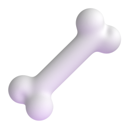
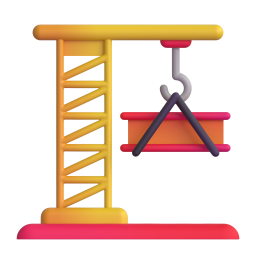

QUALIFICATION JURIDIQUE
ACCIDENT
DU TRAVAIL
Les 3 filtres cumulatifs


1
2
3
Accident du travail : une mécanique stricte
1
Fait accidentel
2
Lésion corporelle
3
Lien avec le travail
Prenez ce cas…
14:00
Entrepôt logistique
Fracture du bras
Filtre 1 : le fait accidentel
CRITÈRE
Soudain

CRITÈRE
Daté
À NE PAS CONFONDRE
Maladie progressive
La chute seule ne suffit pas
Filtre 2 : la lésion corporelle
Il se relève indemne
QUALIFICATION STOP
Physique : fracture
 Psychologique
PsychologiqueLe critère décisif
Filtre 3 : le lien avec le travail
IL ENGAGE
la responsabilité de l'entreprise
Sur le site
Pendant les horaires
3 filtres cumulatifs
1
Fait accidentel
2
Lésion
3
Lien au travail
STATUT REJETÉ
Reprenons notre technicien
1 · FAIT ACCIDENTEL
Chute à 14h00

+
2 · LÉSION CORPORELLE
Fracture du bras
+
3 · LIEN AVEC LE TRAVAIL
Dans l'entrepôt
ACCIDENT DU TRAVAIL VALIDÉ
Des normes aujourd'hui,
un avenir durable demain
un avenir durable demain
En management QHSE,
la qualification d'un accident
du travail répond à une
mécanique juridique stricte.
Prenez ce cas :
à 14 heures précises,
un technicien glisse dans
un entrepôt logistique
et se fracture le bras.
L'analyse commence par
le premier filtre :
le fait accidentel.
L'événement doit être soudain
et précisément daté,
contrairement à une maladie
qui s'installe dans le temps.
Mais la soudaineté de la
chute ne suffit absolument pas.
Si le technicien se relève
indemne,
la qualification s'arrête
net. Il faut prouver une
lésion corporelle,
qu'il s'agisse d'une fracture
visible ou d'un traumatisme
psychologique.
Enfin, le critère décisif,
qui engage la responsabilité
de l'entreprise :
le lien avec le travail.
Il faut prouver que l'incident
est bien survenu sur le
site et pendant les horaires
d'activité.
Attention,
ces trois filtres sont
strictement cumulatifs.
Si un seul de ces critères
manque à l'appel,
l'événement entier perd
son statut officiel.
Reprenons notre technicien :
la chute à 14 heures a
bien provoqué une fracture,
et ce, en plein milieu
de l'entrepôt.
L'équation est complète.
L'accident du travail est
officiellement déclaré.